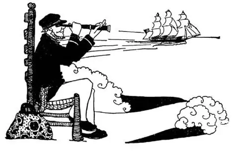

67
Journey’s End
旅行结束

AND so back home once more after a trip Around the World in more than 400 pages! Home, Sweet Home! “’Mid pleasures and palaces though we may roam, be it ever so humble, there is no place like home.” Every one feels the same way, whether he is an Eskimo or a Tibetan. Home is where we were born and brought up—whether it is on a block of ice or under a cocoanut-tree.
I once knew an old sea captain. He had been sailing the seas for fifty years. He had been round the World a score of times. He had been in every port from Punta Arenas to Archangel. He could speak a dozen languages. He had been in every land and on every sea; he had been everywhere and had seen everything. For a dozen years he had looked forward to the day when he could at last “ettle down” and go home. At last that day came. I never saw any one happier as he headed toward home—the place where he was born—a little village in southern Maryland, near the sea.
A year later I met him again in New York. I never saw any one happier. He was all dressed up, with a flower in his buttonhole as if he were going to be married. “Where are you going?” said I. “I’m sailing, sailing at 12 o’clock,” said he, “for a trip round the World!” and I thought he was going to dance a sailor’s hornpipe right there on the street.
“Au revoir,” said I. “I thought you were going to settle down at home.” “Home,” said he, “is a place to come back to,” and he waved a jubilant farewell.
【中文阅读】
经过四百多页的环球旅行之后，我们终于再次回到了家。家啊，温馨的家！“也许我们会贪图享受，羡慕奢华，但是无论家是多么简陋，没有任何地方比得上它！”所有的人对家的感觉都是一样的，无论他是爱斯基摩人还是中国西藏人。家就是我们出生和成长的地方——无论它是在一块冰上还是在椰子树下。
我曾经认识一位老船长。他的航海生涯有五十年了，曾环球航行二十次。他到过世界上所有的港口，从彭塔阿雷纳斯到阿尔汉格尔斯格。他会说十几种语言。他到过每一片陆地和每一个海洋。无论哪里他都去过，无论什么东西他都见过。十几年来，他盼望着最终可以“安定下来”，可以回家的那一天。终于，那一天到来了。当他朝家——他出生的地方——马里兰州南部一个临海的小村庄——走去的时候，我没见过比他更开心的人了。
一年后，我在纽约再次遇见他。我没见过什么人比他更开心了。他打扮得很时髦，钮扣孔里还别着一朵花，好像他要结婚的样子。“你要去哪里呀？”我问道。“去航海呀，12点出发，”他说，“去环球旅行。”看他高兴的样子，我觉得他好像就要在街上跳起水手的角迪舞。
“再见，”我说，“我还以为你要在家安定下来呢。”
“家，是你可以回来休息的地方。”他一边说一边喜气洋洋地向我挥手告别。
